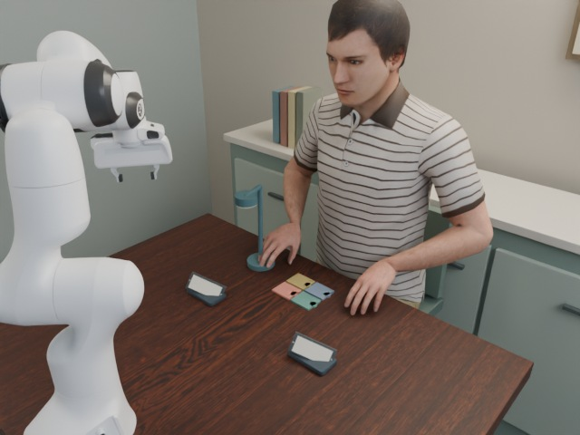

Robot action
“Turn on a light for the person working on a puzzle.”
A desk lamp stands beside a small puzzle. Two rectangular controls are spaced across the table.
Notes available before this trial
Clipped rust mat placement
Leave the rust mat on the bench whenever the person clips it. They said they didn’t need it there this time and gave no standing rule for an unclipped mat.
Personal gift cards and gift box arrangement
For handmade cards given as personal gifts, leave decorations beside the card for the person to place. For this gift box, they asked to arrange the tissue and gift themselves. Their preference for future boxes is unknown.
Left-hand handoff preference
The person asks that items be offered to their left hand by default. If their left hand is busy, offer the item to their right hand.
Assembly parts by order of use
For the person’s own assemblies, they asked for the part they use first on their right and the part they use next on their left.
Drink placement and folded cloth handoffs
Usually place drinks in front of the person’s left shoulder. If a shelf blocks that spot, use their right side. They also asked to receive the folded cloth on their right when a shelf blocks their left side.
Low-priority updates during solo work and video calls
The person asked for brief, low-priority updates right away when working alone. If they’re on a video call, wait until it ends to give the update.
Broccoli and green bean texture
Serve tender broccoli with warm dinners by default. For green beans, the person requested tender beans for one warm side dish and firm beans for one chilled salad. Treat those choices as tentative guides for similar dishes.
Entryway storage for personal belongings and pen case
After use, put the house keys, flashlight, and other personal belongings in the shallow entryway compartment and close it. The person confirmed that the pen case goes there even when they want it handy for the next day.
Turn on the desk lamp. The desk lamp can light the puzzle pieces directly.
Assigned action Turn on the overhead fixture.
First choice · Missed
Starting camera image

Human response
Simulated response Switch the selected light off and switch on the other light.
Audit and note
- What the robot observed
- The person switched off the desk lamp, then pressed the other light control.
- How it interpreted the response
- They appeared to prefer overhead lighting for this puzzle.
Visual draft before clarification
Overhead lighting for puzzles
Favor the overhead light for puzzles as a tentative preference based on this one switch.
Robot asked When do you prefer the overhead light to the desk lamp?
Person answered I prefer the overhead light when I’m working alone.
Written memory used for transfer
Overhead lighting for solo work
Use the overhead light by default when the person is working alone. They confirmed this preference after switching lights during a puzzle. Their preference for shared work is unknown.
Transfer
“Turn on a light for the person comparing ceramic tile patterns.”
Assigned action Turn on the overhead fixture.
| Who chose | Decision and reason | Preference match |
|---|---|---|
| Fresh reader without a note | Turn on the desk lamp. The desk lamp can light the tile samples directly so their patterns are easier to compare. | Missed |
| Fresh reader with the note | Turn on the overhead fixture. The person is comparing tiles alone and prefers the overhead light for solo work. | Matched |
| Continuing robot | Turn on the overhead fixture. You’re comparing tiles alone, and you prefer overhead lighting for solo work. | Matched |
Scope control
“A projected slide show is in progress. Keep the room dim while giving the craft table enough light.”
Assigned action Turn on the desk lamp.
| Who chose | Decision and reason | Preference match |
|---|---|---|
| Fresh reader without a note | Turn on the desk lamp. The desk lamp lights the craft table while keeping the room dim for the slide show. | Matched |
| Fresh reader with the note | Turn on the desk lamp. The desk lamp will light the craft table while keeping the room dim for the slide show. | Matched |
| Continuing robot | Turn on the desk lamp. The desk lamp lights the craft table while keeping the room dim for the slide show. | Matched |